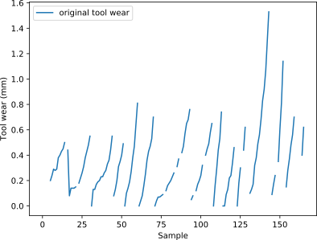
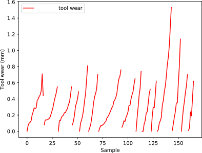
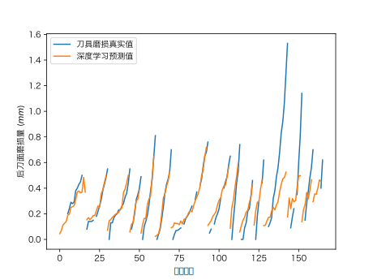

Key Lab of Contemporary Design and Integrated Manufacturing Technology, Northwestern Polytechnical University
Key to exceeding expert and traditional performance is a deep convolutional network which can map a sequence of signal and different condition parameters to tool wear label along with NASA milling dataset.
The network takes as input a time-series of secondary-sampled sensor signal with machining condition parameter , and outputs a sequence of responding tool wear. The position of two main input is located at the beginning of residual block and the end of that. Finally we arrive at an architecture which is 20 residual blocks of convolution followed by a fully connected layer.
To make the optimization of such a deep model tractable, we use residual connections and batch-normalization. The depth increases both the non-linearity of the computation as well as the size of the context window for each regression task. In order to equip model with convenience in transferring model, a feature compression is designed for better performance in transferring model.
To make full use of signal features in different condition, one-hot coding about machining condition is applied. By that, it's easy for network sharing information among different situation and brings benefits in prediction in multiple condition and transferring to new condition.
The matrix for the milling condition parameters chosen for the experiments were guided by industrial applicability and recommended manufacturer's settings. Therefore, the cutting speed was set to 200 m/min which is equivalent to 826 rev/min. Two different depths of cut were chosen, 1.5mm and 0.75mm. Also, two feeds were taken, 0.5mm/rev and 0.25mm/rev which translate into 413mm/min and 206.5mm/min, respectively. Two types of material, cast iron and stainless steel J45 were used and, as already mentioned earlier, with an inserts of type KC710. These choices equal 8 different settings. All experiments were done a second time with the same parameters with a second set of inserts. The size of the workpieces was 483mm x 178mm x 51mm.
Focal point to repair missing tool wear label is over-fitting random forest. Since small amount of original data is missed, a over-fitting random tree could infer the lost value by its powerful generality.
It provides us with a strong tool to deal with lots of historical data without manual inference and re-experiment. In NASA milling data, around 5% data has no label. By that, we successfully fix that hole on ship we are sailing on data ocean.

Before repairing data

After repairing data
By those special design, CNN can extract feature from signal under different milling condition. The error between actual and predicted tool wear remains low. However, since there is a great scale difference between train and test set, model can't predict well in test set which will be transfer destination later.
According to data recorded by TensorBoard, MSE is ~4.0. The prediction of this model is as accurate as CNN in single work condition. It indicates that model can extract feature from different milling signal. The generalization of this model shows its ability to migrate itself to new condition.

As illustrated at previous section, remarkable prediction at different conditions shows model's ability in migrating among different signals. A classical transfer learning approach is used. By freezing weights and bias of lower CNN filters and training at higher CNN layer, model is able to used its prior experience to predict in new environment. This also reduce lots of computation and train time. By applying transfer learning , tons of time could be saved.
According to data recorded by TensorBoard, MSE is ~4.0. The prediction of this model is as accurate as CNN in model transferred before. It proves that model can extract feature from different milling signal and give a high-accurate prediction.